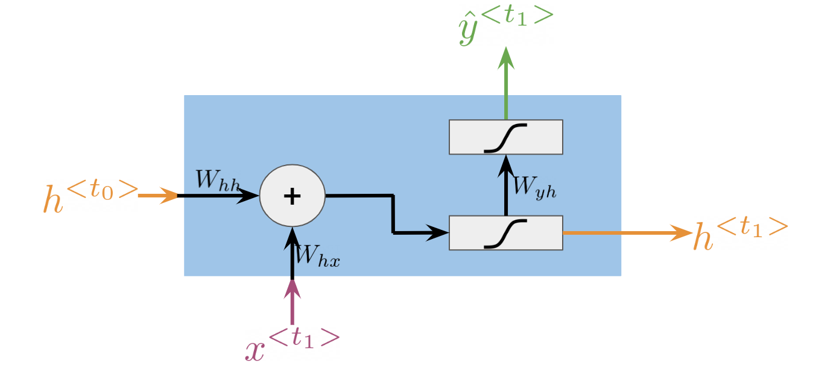
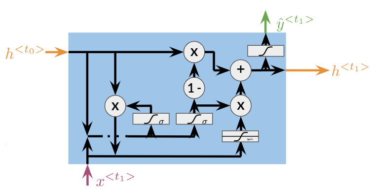

Vanilla RNNs and GRUs#
In this notebook, you will learn how to define the forward method for vanilla RNNs and GRUs from scratch in NumPy. After this, you will create a full neural network with GRU layers using tensorflow.
By completing this notebook, you will:
Be able to define the forward method for vanilla RNNs and GRUs
Be able to build a sequential model using recurrent layers in tensorflow
Be able to use the
return_sequencesparameter in recurrent layers
import numpy as np
from numpy import random
from time import perf_counter
import tensorflow as tf
An implementation of the sigmoid function is provided below so you can use it in this notebook.
def sigmoid(x): # Sigmoid function
return 1.0 / (1.0 + np.exp(-x))
Part 1: Forward method for vanilla RNNs and GRUs using numpy#
In this part of the notebook, you’ll see the implementation of the forward method for a vanilla RNN and you’ll implement that same method for a GRU. For this exercise you’ll use a set of random weights and variables with the following dimensions:
Embedding size (
emb) : 128Hidden state size (
h_dim) : 16
The weights w_ and biases b_ are initialized with dimensions (h_dim, emb + h_dim) and (h_dim, 1). We expect the hidden state h_t to be a column vector with size (h_dim,1) and the initial hidden state h_0 is a vector of zeros.
random.seed(10) # Random seed, so your results match ours
emb = 128 # Embedding size
T = 256 # Length of sequence
h_dim = 16 # Hidden state dimension
h_0 = np.zeros((h_dim, 1)) # Initial hidden state
# Random initialization of weights (w1, w2, w3) and biases (b1, b2, b3)
w1 = random.standard_normal((h_dim, emb + h_dim))
w2 = random.standard_normal((h_dim, emb + h_dim))
w3 = random.standard_normal((h_dim, emb + h_dim))
b1 = random.standard_normal((h_dim, 1))
b2 = random.standard_normal((h_dim, 1))
b3 = random.standard_normal((h_dim, 1))
# Random initialization of input X
# Note that you add the third dimension (1) to achieve the batch representation.
X = random.standard_normal((T, emb, 1))
# Define the lists of weights as you will need them for the two different layers
weights_vanilla = [w1, b1]
weights_GRU = [w1.copy(), w2, w3, b1.copy(), b2, b3]
Note that you are creating two lists where you are storing all the weights. You can see that the vanilla recurrent neural network uses a much smaller subset of weights than GRU. Since you will not be updating any weights in this lab, it is ok to define them in a list like above.
1.1 Forward method for vanilla RNNs#
The vanilla RNN cell is quite straight forward. Its most general structure is presented in the next figure:

As you saw in the lecture videos and in the other lab, the computations made in a vanilla RNN cell are equivalent to the following equations:
fix this
where \([h^{<t-1>},x^{<t>}]\) means that \(h^{<t-1>}\) and \(x^{<t>}\) are concatenated together. In the next cell you have the implementation of the forward method for a vanilla RNN.
def forward_V_RNN(inputs, weights): # Forward propagation for a a single vanilla RNN cell
x, h_t = inputs
# weights.
wh, bh = weights
# new hidden state
h_t = np.dot(wh, np.concatenate([h_t, x])) + bh
h_t = sigmoid(h_t)
# We avoid implementation of y for clarity
y = h_t
return y, h_t
As you can see, we omitted the computation of \(\hat{y}^{<t>}\). This was done for the sake of simplicity, so you can focus on the way that hidden states are updated here and in the GRU cell.
1.2 Forward method for GRUs#
A GRU cell has many more computations than vanilla RNN cells. You can see this visually in the following diagram:

As you saw in the lecture videos, GRUs have relevance \(\Gamma_r\) and update \(\Gamma_u\) gates that control how the hidden state \(h^{<t>}\) is updated on every time step. With these gates, GRUs are capable of keeping relevant information in the hidden state even for long sequences. The equations needed for the forward method in GRUs are provided below:
\begin{equation}
\Gamma_r=\sigma{(W_r[h^{
\begin{equation}
\Gamma_u=\sigma{(W_u[h^{
\begin{equation}
c^{
\begin{equation}
h^{
In the next cell, you will see the implementation of the forward method for a GRU cell by computing the update u and relevance r gates, and the candidate hidden state c.
def forward_GRU(inputs, weights): # Forward propagation for a single GRU cell
x, h_t = inputs
# weights.
wu, wr, wc, bu, br, bc = weights
# Update gate
u = np.dot(wu, np.concatenate([h_t, x])) + bu
u = sigmoid(u)
# Relevance gate
r = np.dot(wr, np.concatenate([h_t, x])) + br
r = sigmoid(r)
# Candidate hidden state
c = np.dot(wc, np.concatenate([r * h_t, x])) + bc
c = np.tanh(c)
# New Hidden state h_t
h_t = u * c + (1 - u) * h_t
# We avoid implementation of y for clarity
y = h_t
return y, h_t
Run the following cell to check your implementation.
forward_GRU([X[1], h_0], weights_GRU)[0]
array([[ 9.77779014e-01],
[-9.97986240e-01],
[-5.19958083e-01],
[-9.99999886e-01],
[-9.99707004e-01],
[-3.02197037e-04],
[-9.58733503e-01],
[ 2.10804828e-02],
[ 9.77365398e-05],
[ 9.99833090e-01],
[ 1.63200940e-08],
[ 8.51874303e-01],
[ 5.21399924e-02],
[ 2.15495959e-02],
[ 9.99878828e-01],
[ 9.77165472e-01]])
Expected output:
array([[ 9.77779014e-01],
[-9.97986240e-01],
[-5.19958083e-01],
[-9.99999886e-01],
[-9.99707004e-01],
[-3.02197037e-04],
[-9.58733503e-01],
[ 2.10804828e-02],
[ 9.77365398e-05],
[ 9.99833090e-01],
[ 1.63200940e-08],
[ 8.51874303e-01],
[ 5.21399924e-02],
[ 2.15495959e-02],
[ 9.99878828e-01],
[ 9.77165472e-01]])
1.3 Implementation of the scan function#
In the lectures you saw how the scan function is used for forward propagation in RNNs. It takes as inputs:
fn: the function to be called recurrently (i.e.forward_GRU)elems: the list of inputs for each time step (X)weights: the parameters needed to computefnh_0: the initial hidden state
scan goes through all the elements x in elems, calls the function fn with arguments ([x, h_t],weights), stores the computed hidden state h_t and appends the result to a list ys. Complete the following cell by calling fn with arguments ([x, h_t],weights).
def scan(fn, elems, weights, h_0): # Forward propagation for RNNs
h_t = h_0
ys = []
for x in elems:
y, h_t = fn([x, h_t], weights)
ys.append(y)
return ys, h_t
In practice, when using libraries like TensorFlow you don’t need to use functions like scan, because this is already implemented under the hood for you. But it is still useful to understand it as you may need to code it from scratch at some point.
In the cell below, you can try the scan function on the data you created above with the function forward_V_RNN and see what it outputs.
ys, h_T = scan(forward_V_RNN, X, weights_vanilla, h_0)
print(f"Length of ys: {len(ys)}")
print(f"Shape of each y within ys: {ys[0].shape}")
print(f"Shape of h_T: {h_T.shape}")
Length of ys: 256
Shape of each y within ys: (16, 1)
Shape of h_T: (16, 1)
You can see that it outputs a sequence of length 256, where each element in a sequence is the same shape as the hidden state (because that is how you defined your forward_V_RNN function).
1.4 Comparison between vanilla RNNs and GRUs#
You have already seen how forward propagation is computed for vanilla RNNs and GRUs. As a quick recap, you need to have a forward method for the recurrent cell and a function like scan to go through all the elements from a sequence using a forward method. You saw that GRUs performed more computations than vanilla RNNs, and you can check that they have 3 times more parameters. In the next two cells, we compute forward propagation for a sequence with 256 time steps (T) for an RNN and a GRU with the same hidden state h_t size (h_dim=16).
# vanilla RNNs
tic = perf_counter()
ys, h_T = scan(forward_V_RNN, X, weights_vanilla, h_0)
toc = perf_counter()
RNN_time=(toc-tic)*1000
print (f"It took {RNN_time:.2f}ms to run the forward method for the vanilla RNN.")
It took 3.88ms to run the forward method for the vanilla RNN.
# GRUs
tic = perf_counter()
ys, h_T = scan(forward_GRU, X, weights_GRU, h_0)
toc = perf_counter()
GRU_time=(toc-tic)*1000
print (f"It took {GRU_time:.2f}ms to run the forward method for the GRU.")
It took 8.62ms to run the forward method for the GRU.
As you saw in the lectures, GRUs take more time to compute. This means that training and prediction would take more time for a GRU than for a vanilla RNN. However, GRUs allow you to propagate relevant information even for long sequences, so when selecting an architecture for NLP you should assess the tradeoff between computational time and performance.
Part 2: Create a GRU model in tensorflow#
You will use the Sequential model using some GRU layers. You should already be familiar with the sequential model and with the Dense layers. In addition, you will use GRU layers in this notebook. Below you can find some links to the documentation and a short description.
SequentialA Sequential model is appropriate for a plain stack of layers where each layer has exactly one input tensor and one output tensor.DenseA regular fully connected layerGRUThe GRU (gated recurrent unit) layer. The hidden state dimension should be specified (the syntax is the same as forDense). By default it does not return a sequence, but only the output of the last unit. If you want to stack two consecutive GRU layers, you need the first one to output a sequence, which you can achieve by setting the parameterreturn_sequencesto True. If you are further interested in similar layers, you can also check out theRNN,LSTMandBidirectional. If you want to use a RNN or LSTM instead of GRU in the code below, simply change the layer name, no other change in the syntax is needed.
Putting everything together the GRU model will look like this:
model_GRU = tf.keras.Sequential([
tf.keras.layers.GRU(256, return_sequences=True, name='GRU_1_returns_seq'),
tf.keras.layers.GRU(128, return_sequences=True, name='GRU_2_returns_seq'),
tf.keras.layers.GRU(64, name='GRU_3_returns_last_only'),
tf.keras.layers.Dense(10)
])
To see how your model looks like, you can print out its summary. But beware, you cannot look at model’s summary before the model knows what kind of data it should expect.
# This line should fail
try:
model_GRU.summary()
except Exception as e:
print(e)
Model: "sequential"
┏━━━━━━━━━━━━━━━━━━━━━━━━━━━━━━━━━━━━━━┳━━━━━━━━━━━━━━━━━━━━━━━━━━━━━┳━━━━━━━━━━━━━━━━━┓ ┃ Layer (type) ┃ Output Shape ┃ Param # ┃ ┡━━━━━━━━━━━━━━━━━━━━━━━━━━━━━━━━━━━━━━╇━━━━━━━━━━━━━━━━━━━━━━━━━━━━━╇━━━━━━━━━━━━━━━━━┩ │ GRU_1_returns_seq (GRU) │ ? │ 0 (unbuilt) │ ├──────────────────────────────────────┼─────────────────────────────┼─────────────────┤ │ GRU_2_returns_seq (GRU) │ ? │ 0 (unbuilt) │ ├──────────────────────────────────────┼─────────────────────────────┼─────────────────┤ │ GRU_3_returns_last_only (GRU) │ ? │ 0 (unbuilt) │ ├──────────────────────────────────────┼─────────────────────────────┼─────────────────┤ │ dense (Dense) │ ? │ 0 (unbuilt) │ └──────────────────────────────────────┴─────────────────────────────┴─────────────────┘
Total params: 0 (0.00 B)
Trainable params: 0 (0.00 B)
Non-trainable params: 0 (0.00 B)
You see that the exception says that the model has not yet been built, so it does not allow you to see its summary. You will see two options on how to build a model that are described in the exception above.
First, you will define some input data (a random tensor) of the desired shape and pass this data through the model. Now the model knows the shape of the data and can also calculate the number of parameters it needs for each layer, so the .summary() method should work.
# Remember these three numbers and follow them further through the notebook
batch_size = 60
sequence_length = 50
word_vector_length = 40
input_data = tf.random.normal([batch_size, sequence_length, word_vector_length])
# Pass the data through the network
prediction = model_GRU(input_data)
# Show the summary of the model
model_GRU.summary()
Model: "sequential"
┏━━━━━━━━━━━━━━━━━━━━━━━━━━━━━━━━━━━━━━┳━━━━━━━━━━━━━━━━━━━━━━━━━━━━━┳━━━━━━━━━━━━━━━━━┓ ┃ Layer (type) ┃ Output Shape ┃ Param # ┃ ┡━━━━━━━━━━━━━━━━━━━━━━━━━━━━━━━━━━━━━━╇━━━━━━━━━━━━━━━━━━━━━━━━━━━━━╇━━━━━━━━━━━━━━━━━┩ │ GRU_1_returns_seq (GRU) │ (60, 50, 256) │ 228,864 │ ├──────────────────────────────────────┼─────────────────────────────┼─────────────────┤ │ GRU_2_returns_seq (GRU) │ (60, 50, 128) │ 148,224 │ ├──────────────────────────────────────┼─────────────────────────────┼─────────────────┤ │ GRU_3_returns_last_only (GRU) │ (60, 64) │ 37,248 │ ├──────────────────────────────────────┼─────────────────────────────┼─────────────────┤ │ dense (Dense) │ (60, 10) │ 650 │ └──────────────────────────────────────┴─────────────────────────────┴─────────────────┘
Total params: 414,986 (1.58 MB)
Trainable params: 414,986 (1.58 MB)
Non-trainable params: 0 (0.00 B)
Now you can inspect the numbers in the Output Shape column. Note that all the numbers for parameters are distinct (each number is different), so you can more easily inspect what is going on (typically the batch size would be a power of 2, but here we choose it to be 60, just to be distinct from other numbers).
You can see that the
word_vector_length(originally set to 40) which represents the word embedding dimension is already being changed to 256 in the first row. In other words, the model’s first GRU layer takes the original 40-dimensional word vectors and transforms them into its own 256-dimensional representations.Next you can look at the
sequence_length(originally set to 50). The sequence length propagates through the model in the first two layers and then disappears. Note that these are the two GRU layers that return sequences, while the last GRU layer does not return a sequence, but only the output from the last cell, thus one dimension disappears from the model.Lastly have a look at the
batch_size(originally set to 60), which propagates through the whole model (which makes sense, right?).
Now if you try to pass data of different shape through the network, it might be allowed in some cases, but not in others, let’s see this in action.
# Define some data with a different length of word vectors
new_word_vector_length = 44 # Before it was 40
# Keep the batch_size = 60 and sequence_length = 50 as originally
input_data_1 = tf.random.normal([batch_size, sequence_length, new_word_vector_length])
# Pass the data through the network. This should Fail (if you ran all the cells above)
try:
prediction = model_GRU(input_data_1)
except Exception as e:
print(e)
Exception encountered when calling GRUCell.call().
{{function_node __wrapped____MklMatMul_device_/job:localhost/replica:0/task:0/device:CPU:0}} Matrix size-incompatible: In[0]: [60,44], In[1]: [40,768] [Op:MatMul] name:
Arguments received by GRUCell.call():
• inputs=tf.Tensor(shape=(60, 44), dtype=float32)
• states=('tf.Tensor(shape=(60, 256), dtype=float32)',)
• training=False
Why did this fail? Remember how the layers are constructed: they know what length of vectors to expect and they have their weight matrices defined to accommodate for it. However if you change the length of the word vector, it cannot be multiplied by an incompatible matrix .
How about the sequence_length (number of words)?
# Define some data with a different length of the sequence
new_sequence_length = 55 # Before it was 50
# Keep the batch_size = 60 and word_vector_length = 40 as originally
input_data_2 = tf.random.normal([batch_size, new_sequence_length, word_vector_length])
# Pass the data through the network. This should Fail (if you ran all the cells above)
prediction = model_GRU(input_data_2)
model_GRU.summary()
Model: "sequential"
┏━━━━━━━━━━━━━━━━━━━━━━━━━━━━━━━━━━━━━━┳━━━━━━━━━━━━━━━━━━━━━━━━━━━━━┳━━━━━━━━━━━━━━━━━┓ ┃ Layer (type) ┃ Output Shape ┃ Param # ┃ ┡━━━━━━━━━━━━━━━━━━━━━━━━━━━━━━━━━━━━━━╇━━━━━━━━━━━━━━━━━━━━━━━━━━━━━╇━━━━━━━━━━━━━━━━━┩ │ GRU_1_returns_seq (GRU) │ (60, 50, 256) │ 228,864 │ ├──────────────────────────────────────┼─────────────────────────────┼─────────────────┤ │ GRU_2_returns_seq (GRU) │ (60, 50, 128) │ 148,224 │ ├──────────────────────────────────────┼─────────────────────────────┼─────────────────┤ │ GRU_3_returns_last_only (GRU) │ (60, 64) │ 37,248 │ ├──────────────────────────────────────┼─────────────────────────────┼─────────────────┤ │ dense (Dense) │ (60, 10) │ 650 │ └──────────────────────────────────────┴─────────────────────────────┴─────────────────┘
Total params: 414,986 (1.58 MB)
Trainable params: 414,986 (1.58 MB)
Non-trainable params: 0 (0.00 B)
Well, this worked! Why? because the neural network does not have any specific parameters (weights) associated with the length of the sequence, so it is flexible in this dimension. Look at the summary at what happened in the second dimension of the output of the first two layers. Where there was “50” before, it turned to “None”. This tells you that the network now expects any sequence length.
How about batch_size? If you guessed it must also be flexible, you are right. You can any time change the batch size and the model should be fine with it. Let’s test it.
# Define some data with a different batch size
new_batch_size = 66 # Before it was 60
# Keep the sequence_length = 50 and word_vector_length = 40 as originally
input_data_3 = tf.random.normal([new_batch_size, sequence_length, word_vector_length])
# Pass the data through the network. This should Fail (if you ran all the cells above)
prediction = model_GRU(input_data_3)
model_GRU.summary()
Model: "sequential"
┏━━━━━━━━━━━━━━━━━━━━━━━━━━━━━━━━━━━━━━┳━━━━━━━━━━━━━━━━━━━━━━━━━━━━━┳━━━━━━━━━━━━━━━━━┓ ┃ Layer (type) ┃ Output Shape ┃ Param # ┃ ┡━━━━━━━━━━━━━━━━━━━━━━━━━━━━━━━━━━━━━━╇━━━━━━━━━━━━━━━━━━━━━━━━━━━━━╇━━━━━━━━━━━━━━━━━┩ │ GRU_1_returns_seq (GRU) │ (60, 50, 256) │ 228,864 │ ├──────────────────────────────────────┼─────────────────────────────┼─────────────────┤ │ GRU_2_returns_seq (GRU) │ (60, 50, 128) │ 148,224 │ ├──────────────────────────────────────┼─────────────────────────────┼─────────────────┤ │ GRU_3_returns_last_only (GRU) │ (60, 64) │ 37,248 │ ├──────────────────────────────────────┼─────────────────────────────┼─────────────────┤ │ dense (Dense) │ (60, 10) │ 650 │ └──────────────────────────────────────┴─────────────────────────────┴─────────────────┘
Total params: 414,986 (1.58 MB)
Trainable params: 414,986 (1.58 MB)
Non-trainable params: 0 (0.00 B)
Now the output shape has “None” everywhere except for the last dimension of each layer. This means it accepts batches and sequences of any size, but the length of the word vector and the hidden states stay the same.
Alternative: use model.build().
Rather than passing data through the model, you can also specify the size of the data in an array and pass it to model.build(). This will build the model, taking into account the data shape. You can also pass None, where the data dimension may change.
model_GRU_2 = tf.keras.Sequential([
tf.keras.layers.GRU(256, return_sequences=True, name='GRU_1_returns_seq'),
tf.keras.layers.GRU(128, return_sequences=True, name='GRU_2_returns_seq'),
tf.keras.layers.GRU(64, name='GRU_3_returns_last_only'),
tf.keras.layers.Dense(10)
])
model_GRU_2.build([None, None, word_vector_length])
model_GRU_2.summary()
Model: "sequential_1"
┏━━━━━━━━━━━━━━━━━━━━━━━━━━━━━━━━━━━━━━┳━━━━━━━━━━━━━━━━━━━━━━━━━━━━━┳━━━━━━━━━━━━━━━━━┓ ┃ Layer (type) ┃ Output Shape ┃ Param # ┃ ┡━━━━━━━━━━━━━━━━━━━━━━━━━━━━━━━━━━━━━━╇━━━━━━━━━━━━━━━━━━━━━━━━━━━━━╇━━━━━━━━━━━━━━━━━┩ │ GRU_1_returns_seq (GRU) │ (None, None, 256) │ 228,864 │ ├──────────────────────────────────────┼─────────────────────────────┼─────────────────┤ │ GRU_2_returns_seq (GRU) │ (None, None, 128) │ 148,224 │ ├──────────────────────────────────────┼─────────────────────────────┼─────────────────┤ │ GRU_3_returns_last_only (GRU) │ (None, 64) │ 37,248 │ ├──────────────────────────────────────┼─────────────────────────────┼─────────────────┤ │ dense_1 (Dense) │ (None, 10) │ 650 │ └──────────────────────────────────────┴─────────────────────────────┴─────────────────┘
Total params: 414,986 (1.58 MB)
Trainable params: 414,986 (1.58 MB)
Non-trainable params: 0 (0.00 B)
Congratulations! Now you know how the forward method is implemented for vanilla RNNs and GRUs, and you can implement them in tensorflow.